~12 Using Duplicate Clips to Make a Soft Shadow in DaVinci Resolve~
8/17/2026
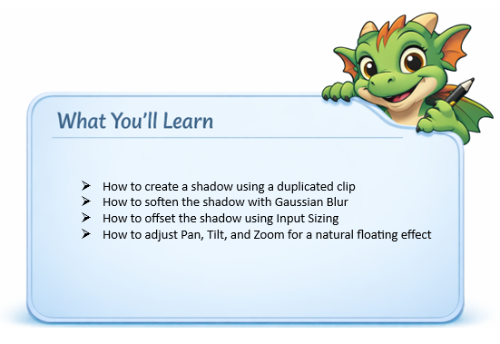
Let’s make a shadow. Ok, well maybe not quite like this one. But it will be a shadow.
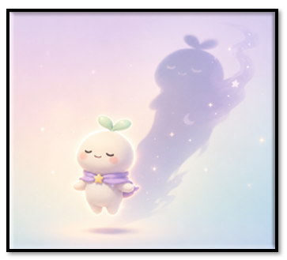
In DaVinci Resolve, duplicate the track you want to add a shadow to, then pull it under the main track.
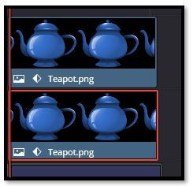
Go to the Color page
Use Gain on the Color page to do this. Gain controls Highlights or Brightness. On the color page you do not turn something black by increasing the shadow’s setting, you turn it to black by removing the brightness, and Gain is how you remove brightness.
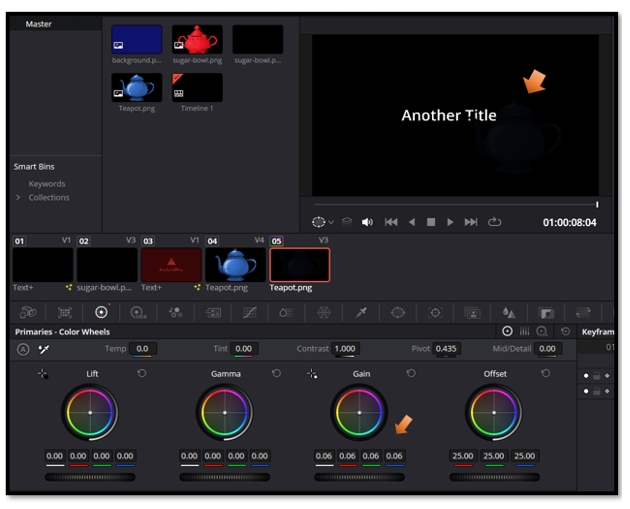
I decided on 0.71
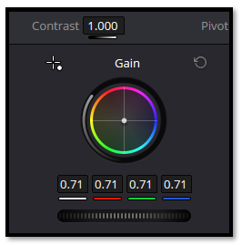
Just pull gain down until the teapot, which is on the bottom track looks like a shadow.
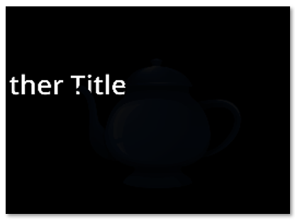
Effect – Gaussian Blur
Go Back to the Edit Page. Now go to Effects at the top and choose Gaussian Blur
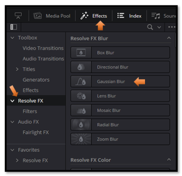
Just drag that text that says Gaussian Blur, in the Effects panel, down onto the teapot to give it a blur. I lowered my strength a bit to 0.481
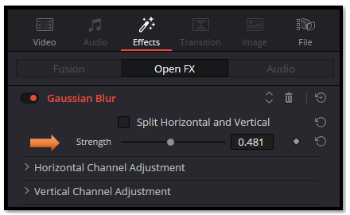
To Offset the Bottom Shadow Layer
Go to the Color page
Make sure you have the correct layer selected here. Remember we added a gaussian Blur, So, it should have an fx in the right-hand bottom corner.
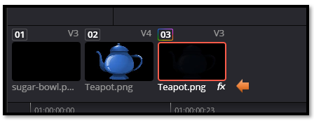
Go to the bottom of this page where your color wheels are.
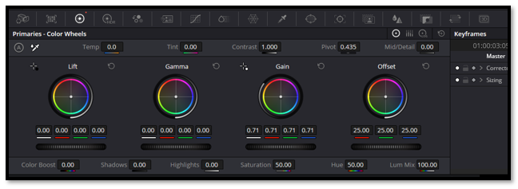
We want Input Sizing, so go to this icon here.
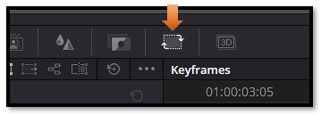
Inside Input Sizing, the controls you want are:
Pan (X) → moves the shadow left/right
Tilt (Y) → moves the shadow up/down
Zoom → makes the shadow slightly smaller or larger
These are the numbers that I finally used for my teapot
- Pan:
0.600 - Tilt:
-0.600 - Zoom:
0.986
This is the shadow that it created
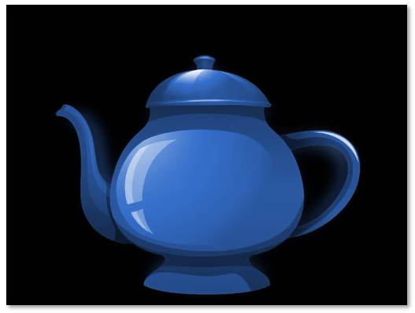
As you finish this step, take a moment to appreciate how much control you now have over the look and feel of your animation. A simple shadow can completely change the depth, mood, and realism of a scene, and now you know how to shape it exactly the way you want. Keep experimenting with small adjustments — that’s where the magic lives — and you’ll find your confidence growing with every project you touch.